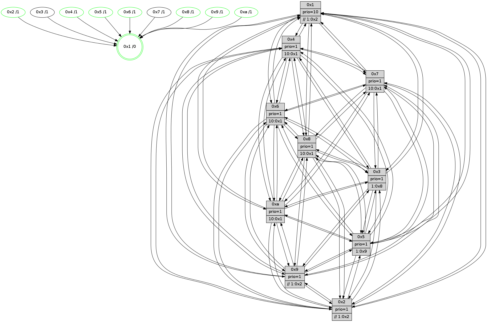

>> << IDX [start] -100 -25 -5 +0 +5 +25 +100 [770.43257308]
 Previous packets
765.005644 beacon08(faad) #0 coord=01,02,03,04,05,06,07,0a,09,08 cycle=688.0ms assoc 64 5e 6a
765.017278 [Hello(1): seq=399 sym=4,2,9,5,10,8,6,7 sysInfo=coloring-mode-on,ColoringModeRequestCalled stat=4:3,12,12,0/2:0,2,3,9/9:6,13,11,1/5:0,15,12,2/10:0,7,1,8/8:10,5,5,7/6:2,0,4,7/7:8,11,9,9]
765.020927 [Color(4) seq=119 @0:0 prio=1 >10.@1,1.@2,1.@3,1.@5]
765.022562 [Hello(5): seq=490 sym=7,6,4,3,1,9,8,10,2 sysInfo=hasWarning stat=7:15,11,0,5/6:12,0,14,7/4:10,4,3,5/3:13,1,4,6/1:9,14,1,1/9:0,13,7,0/8:4,5,5,5/10:9,13,3,0/2:2,6,2,0]
765.025378 [Color(5) seq=143 @0:0 prio=1 >1.@9,1.@a]
765.027181 [Hello(2): seq=486 sym=4,5,7,6,3,9,8,10,1 sysInfo=hasWarning stat=4:3,13,8,4/5:11,2,6,2/7:11,6,0,5/6:8,2,12,6/3:9,6,5,3/9:10,14,5,0/8:8,9,5,5/10:1,15,6,5/1:8,10,12,1]
765.030022 [Color(2) seq=135 @0:0 prio=1 >>1.@2,1.@3,1.@4]
765.032443 [Hello(3): seq=490 sym=1,7,6,2,4,8,9,10,5 sysInfo= stat=1:7,5,3,0/7:11,15,9,3/6:11,11,4,8/2:15,13,8,8/4:5,10,6,5/8:9,11,8,3/9:14,6,13,7/10:0,14,11,6/5:8,12,7,8]
765.035069 [Hello(6): seq=490 sym=2,3,5,4,7,9,8,10,1 sysInfo= stat=2:8,4,1,7/3:12,11,10,7/5:3,15,11,10/4:14,0,8,0/7:9,15,9,1/9:1,2,11,6/8:3,4,12,6/10:7,14,2,7/1:13,9,14,1]
----------------------------------------------------------------------
765.703787 beacon01(faad) #0 coord=01,02,03,04,05,06,07,0a,09,08 cycle=688.0ms assoc
-- color-indic=1 64 77 bf
765.713769 beacon02(faad) #0 coord=01,02,03,04,05,06,07,0a,09,08 cycle=688.0ms assoc 64 e4 8e
765.723769 beacon03(faad) #0 coord=01,02,03,04,05,06,07,0a,09,08 cycle=688.0ms assoc 64 9e c3
765.733772 beacon04(faad) #0 coord=01,02,03,04,05,06,07,0a,09,08 cycle=688.0ms assoc 64 e9 29
765.743771 beacon05(faad) #0 coord=01,02,03,04,05,06,07,0a,09,08 cycle=688.0ms assoc 64 93 64
765.753769 beacon06(faad) #0 coord=01,02,03,04,05,06,07,0a,09,08 cycle=688.0ms assoc 64 1d b3
765.763770 beacon07(faad) #0 coord=01,02,03,04,05,06,07,0a,09,08 cycle=688.0ms assoc 64 67 fe
765.773776 beacon0a(faad) #0 coord=01,02,03,04,05,06,07,0a,09,08 cycle=688.0ms assoc 64 16 f5
765.783775 beacon09(faad) #0 coord=01,02,03,04,05,06,07,0a,09,08 cycle=688.0ms assoc 64 98 22
765.793775 beacon08(faad) #0 coord=01,02,03,04,05,06,07,0a,09,08 cycle=688.0ms assoc 64 e2 6f
765.805957 [Hello(4): seq=490 sym=5,7,6,2,3,9,8,10,1 sysInfo= stat=5:11,6,9,8/7:10,0,13,3/6:6,11,12,8/2:12,7,6,8/3:10,5,4,5/9:9,14,10,3/8:14,2,11,8/10:5,0,14,7/1:13,6,2,1]
765.809308 [STC(1) #0.79 tree-change,inconsistent-stability,stable,to-color d=0]
765.810589 [Hello(10): seq=423 sym=6,2,3,8,9,5,7,4,1 sysInfo=hasWarning stat=6:8,14,13,3/2:2,9,3,2/3:9,13,1,5/8:4,2,8,7/9:0,0,5,5/5:4,12,9,10/7:4,13,11,3/4:9,14,2,6/1:2,11,2,1]
765.814026 [Hello(9): seq=434 sym=2,5,3,4,7,6,8,10,1 sysInfo=hasWarning stat=2:10,1,1,0/5:9,13,3,1/3:12,4,5,8/4:12,9,6,5/7:1,15,15,5/6:15,4,10,6/8:8,12,1,0/10:3,9,1,0/1:12,5,3,1]
765.816748 [Color(10) seq=122 @0:0 prio=1 >10.@1,1.@2,1.@3,1.@5]
765.819552 [Color(9) seq=139 @0:0 prio=1 >>1.@2,1.@3,1.@5]
765.821097 [Hello(8): seq=434 sym=5,2,3,4,7,6,9,10,1 sysInfo=hasWarning stat=5:0,14,13,9/2:9,7,2,2/3:15,13,9,9/4:0,11,10,6/7:0,10,13,7/6:15,0,9,8/9:5,0,12,6/10:14,12,10,6/1:5,10,0,0]
765.824982 [Hello(7): seq=490 sym=2,3,5,6,4,8,9,10,1 sysInfo=hasWarning stat=2:2,3,1,10/3:1,14,14,9/5:1,3,15,13/6:10,3,15,3/4:10,7,10,0/8:9,14,0,5/9:8,12,14,9/10:0,13,0,8/1:8,3,3,0]
765.828935 [Color(1) seq=171 @0:0 prio=10 >>1.@2,1.@3,1.@5]
765.832250 [Color(6) seq=144 @0:0 prio=1 >10.@1,1.@8,1.@9,1.@a]
765.840627 [Color(8) seq=157 @0:0 prio=1 >10.@1,1.@2,1.@3,1.@5]
----------------------------------------------------------------------
766.491923 beacon01(faad) #0 coord=01,02,03,04,05,06,07,0a,09,08 cycle=688.0ms assoc
-- color-indic=1 64 b3 b1
766.501907 beacon02(faad) #0 coord=01,02,03,04,05,06,07,0a,09,08 cycle=688.0ms assoc 64 20 80
766.511906 beacon03(faad) #0 coord=01,02,03,04,05,06,07,0a,09,08 cycle=688.0ms assoc 64 5a cd
766.521907 beacon04(faad) #0 coord=01,02,03,04,05,06,07,0a,09,08 cycle=688.0ms assoc 64 2d 27
766.531907 beacon05(faad) #0 coord=01,02,03,04,05,06,07,0a,09,08 cycle=688.0ms assoc 64 57 6a
766.541906 beacon06(faad) #0 coord=01,02,03,04,05,06,07,0a,09,08 cycle=688.0ms assoc 64 d9 bd
766.551907 beacon07(faad) #0 coord=01,02,03,04,05,06,07,0a,09,08 cycle=688.0ms assoc 64 a3 f0
766.561913 beacon0a(faad) #0 coord=01,02,03,04,05,06,07,0a,09,08 cycle=688.0ms assoc 64 d2 fb
766.571910 beacon09(faad) #0 coord=01,02,03,04,05,06,07,0a,09,08 cycle=688.0ms assoc 64 5c 2c
766.581912 beacon08(faad) #0 coord=01,02,03,04,05,06,07,0a,09,08 cycle=688.0ms assoc 64 26 61
766.593176 [Hello(1): seq=400 sym=4,2,9,5,10,3,8,6,7 sysInfo=coloring-mode-on,ColoringModeRequestCalled stat=4:4,13,12,0/2:1,3,3,9/9:6,13,11,1/5:1,0,12,2/10:0,7,1,8/3:0,0,0,0/8:10,6,5,7/6:3,1,4,7/7:8,11,9,9]
766.595828 [Hello(6): seq=491 sym=2,3,5,4,7,9,8,10,1 sysInfo= stat=2:8,4,1,7/3:12,11,10,7/5:3,15,11,10/4:15,0,8,0/7:9,15,9,1/9:1,2,11,6/8:3,5,12,6/10:7,14,2,7/1:13,9,14,1]
766.599184 [STC(4)->1 #0.79 tree-change,inconsistent-stability,stable,to-color d=1]
766.600466 [Hello(5): seq=491 sym=7,6,4,3,1,9,8,10,2 sysInfo=hasWarning stat=7:0,11,0,5/6:13,1,14,7/4:11,4,3,5/3:14,1,4,6/1:10,15,2,1/9:1,14,7,0/8:5,6,5,5/10:10,14,3,0/2:3,7,2,0]
766.603590 [STC(5)->1 #0.79 tree-change,inconsistent-stability,stable,to-color d=1]
766.607131 [Color(5) seq=144 @0:0 prio=1 >1.@9,1.@a]
766.610013 [Hello(2): seq=487 sym=4,5,7,6,3,9,8,10,1 sysInfo=hasWarning stat=4:4,13,8,4/5:11,2,6,2/7:12,6,0,5/6:9,3,12,6/3:10,6,5,3/9:11,15,5,0/8:9,10,5,5/10:2,0,6,5/1:9,11,13,1]
766.614430 [STC(2)->1 #0.79 tree-change,inconsistent-stability,stable,to-color d=1]
766.616380 [Color(2) seq=136 @0:0 prio=1 >>1.@2,1.@3,1.@4]
766.621365 [Hello(3): seq=491 sym=1,7,6,2,4,8,9,10,5 sysInfo= stat=1:7,6,4,0/7:12,15,9,3/6:12,12,4,8/2:15,13,8,8/4:6,10,6,5/8:10,12,8,3/9:15,7,13,7/10:1,15,11,6/5:8,12,7,8]
766.625029 [Color(4) seq=120 @0:0 prio=1 >10.@1,1.@2,1.@3,1.@5]
766.629449 [STC(3)->1 #0.79 tree-change,inconsistent-stability,to-color d=1]
----------------------------------------------------------------------
767.280053 beacon01(faad) #0 coord=01,02,03,04,05,06,07,0a,09,08 cycle=688.0ms assoc
-- color-indic=1 64 0f b4
767.290035 beacon02(faad) #0 coord=01,02,03,04,05,06,07,0a,09,08 cycle=688.0ms assoc 64 9c 85
767.300036 beacon03(faad) #0 coord=01,02,03,04,05,06,07,0a,09,08 cycle=688.0ms assoc 64 e6 c8
767.310035 beacon04(faad) #0 coord=01,02,03,04,05,06,07,0a,09,08 cycle=688.0ms assoc 64 91 22
767.320037 beacon05(faad) #0 coord=01,02,03,04,05,06,07,0a,09,08 cycle=688.0ms assoc 64 eb 6f
767.330037 beacon06(faad) #0 coord=01,02,03,04,05,06,07,0a,09,08 cycle=688.0ms assoc 64 65 b8
767.340037 beacon07(faad) #0 coord=01,02,03,04,05,06,07,0a,09,08 cycle=688.0ms assoc 64 1f f5
767.350043 beacon0a(faad) #0 coord=01,02,03,04,05,06,07,0a,09,08 cycle=688.0ms assoc 64 6e fe
767.360042 beacon09(faad) #0 coord=01,02,03,04,05,06,07,0a,09,08 cycle=688.0ms assoc 64 e0 29
767.370040 beacon08(faad) #0 coord=01,02,03,04,05,06,07,0a,09,08 cycle=688.0ms assoc 64 9a 64
767.382550 [Hello(4): seq=491 sym=5,7,6,2,3,9,8,10,1 sysInfo= stat=5:12,6,9,8/7:11,0,13,3/6:7,12,12,8/2:12,7,6,8/3:10,5,5,5/9:10,15,10,3/8:15,3,11,8/10:6,1,14,7/1:14,7,3,1]
767.385286 [Hello(7): seq=491 sym=2,3,5,6,4,8,9,10,1 sysInfo=hasWarning stat=2:3,4,2,10/3:2,14,15,9/5:2,4,0,13/6:11,4,15,3/4:10,8,11,0/8:9,15,0,5/9:8,12,14,9/10:0,13,0,8/1:9,4,3,0]
767.389465 [Hello(9): seq=435 sym=2,5,3,4,7,6,8,10,1 sysInfo=hasWarning stat=2:11,2,2,0/5:10,14,4,1/3:13,4,6,8/4:13,10,7,5/7:2,15,15,5/6:0,5,10,6/8:9,13,1,0/10:3,9,1,0/1:13,6,3,1]
767.393575 [Color(9) seq=140 @0:0 prio=1 >>1.@2,1.@3,1.@5]
767.398980 [Hello(8): seq=435 sym=5,2,3,4,7,6,9,10,1 sysInfo=hasWarning stat=5:1,15,14,9/2:10,8,3,2/3:0,13,10,9/4:1,12,11,6/7:0,10,13,7/6:0,0,9,8/9:5,0,12,6/10:14,12,10,6/1:6,10,0,0]
767.402303 [Hello(10): seq=424 sym=6,2,3,8,9,5,7,4,1 sysInfo=hasWarning stat=6:9,15,13,3/2:3,10,4,2/3:10,13,2,5/8:5,3,8,7/9:0,1,5,5/5:5,13,10,10/7:5,13,11,3/4:10,15,3,6/1:3,12,2,1]
767.405966 [Color(6) seq=145 @0:0 prio=1 >10.@1,1.@8,1.@9,1.@a]
767.411009 [Color(10) seq=123 @0:0 prio=1 >10.@1,1.@2,1.@3,1.@5]
767.415523 [Color(8) seq=158 @0:0 prio=1 >10.@1,1.@2,1.@3,1.@5]
----------------------------------------------------------------------
768.068183 beacon01(faad) #0 coord=01,02,03,04,05,06,07,0a,09,08 cycle=688.0ms assoc
-- color-indic=1 64 8a 0a
768.078167 beacon02(faad) #0 coord=01,02,03,04,05,06,07,0a,09,08 cycle=688.0ms assoc 64 19 3b
768.088166 beacon03(faad) #0 coord=01,02,03,04,05,06,07,0a,09,08 cycle=688.0ms assoc 64 63 76
768.098165 beacon04(faad) #0 coord=01,02,03,04,05,06,07,0a,09,08 cycle=688.0ms assoc 64 14 9c
768.108166 beacon05(faad) #0 coord=01,02,03,04,05,06,07,0a,09,08 cycle=688.0ms assoc 64 6e d1
768.118169 beacon06(faad) #0 coord=01,02,03,04,05,06,07,0a,09,08 cycle=688.0ms assoc 64 e0 06
768.128168 beacon07(faad) #0 coord=01,02,03,04,05,06,07,0a,09,08 cycle=688.0ms assoc 64 9a 4b
768.138170 beacon0a(faad) #0 coord=01,02,03,04,05,06,07,0a,09,08 cycle=688.0ms assoc 64 eb 40
768.148173 beacon09(faad) #0 coord=01,02,03,04,05,06,07,0a,09,08 cycle=688.0ms assoc 64 65 97
768.158171 beacon08(faad) #0 coord=01,02,03,04,05,06,07,0a,09,08 cycle=688.0ms assoc 64 1f da
768.169722 [Hello(1): seq=401 sym=4,2,9,5,10,3,8,6,7 sysInfo=coloring-mode-on,ColoringModeRequestCalled stat=4:5,14,13,0/2:2,4,4,9/9:7,14,11,1/5:2,1,13,2/10:1,8,1,8/3:1,0,1,0/8:11,7,5,7/6:4,2,4,7/7:8,11,9,9]
768.172522 [Color(4) seq=121 @0:0 prio=1 >10.@1,1.@2,1.@3,1.@5]
768.174102 [Hello(3): seq=492 sym=1,7,6,2,4,8,9,10,5 sysInfo= stat=1:7,7,4,0/7:12,15,9,3/6:12,13,4,8/2:15,13,8,8/4:7,10,6,5/8:11,13,8,3/9:0,8,13,7/10:2,0,11,6/5:8,12,7,8]
768.176630 [Hello(2): seq=488 sym=4,5,7,6,3,9,8,10,1 sysInfo=hasWarning stat=4:5,14,8,4/5:11,2,6,2/7:13,6,0,5/6:10,4,12,6/3:11,6,6,3/9:12,0,5,0/8:10,11,5,5/10:3,1,6,5/1:10,11,13,1]
768.179441 [Color(2) seq=137 @0:0 prio=1 >>1.@2,1.@3,1.@4]
768.183431 [Hello(5): seq=492 sym=7,6,4,3,1,9,8,10,2 sysInfo=hasWarning stat=7:0,11,0,5/6:14,2,14,7/4:12,5,3,5/3:15,1,5,6/1:11,15,2,1/9:2,15,7,0/8:6,7,5,5/10:11,15,3,0/2:4,8,3,0]
768.186880 [Color(5) seq=145 @0:0 prio=1 >1.@9,1.@a]
768.191098 [Hello(6): seq=492 sym=2,3,5,4,7,9,8,10,1 sysInfo= stat=2:9,5,2,7/3:13,11,11,7/5:4,0,12,10/4:0,1,9,0/7:9,15,9,1/9:1,2,11,6/8:3,6,12,6/10:7,15,2,7/1:13,9,14,1]
----------------------------------------------------------------------
768.856313 beacon01(faad) #0 coord=01,02,03,04,05,06,07,0a,09,08 cycle=688.0ms assoc
-- color-indic=1 64 36 0f
768.866295 beacon02(faad) #0 coord=01,02,03,04,05,06,07,0a,09,08 cycle=688.0ms assoc 64 a5 3e
768.876295 beacon03(faad) #0 coord=01,02,03,04,05,06,07,0a,09,08 cycle=688.0ms assoc 64 df 73
768.886295 beacon04(faad) #0 coord=01,02,03,04,05,06,07,0a,09,08 cycle=688.0ms assoc 64 a8 99
768.896297 beacon05(faad) #0 coord=01,02,03,04,05,06,07,0a,09,08 cycle=688.0ms assoc 64 d2 d4
768.906296 beacon06(faad) #0 coord=01,02,03,04,05,06,07,0a,09,08 cycle=688.0ms assoc 64 5c 03
768.916296 beacon07(faad) #0 coord=01,02,03,04,05,06,07,0a,09,08 cycle=688.0ms assoc 64 26 4e
768.926301 beacon0a(faad) #0 coord=01,02,03,04,05,06,07,0a,09,08 cycle=688.0ms assoc 64 57 45
768.946301 beacon08(faad) #0 coord=01,02,03,04,05,06,07,0a,09,08 cycle=688.0ms assoc 64 a3 df
768.957788 [Hello(7): seq=492 sym=2,3,5,6,4,8,9,10,1 sysInfo=hasWarning stat=2:4,5,2,10/3:2,14,15,9/5:3,5,0,13/6:12,5,15,3/4:10,9,11,0/8:10,0,0,5/9:9,13,14,9/10:1,14,0,8/1:10,4,3,0]
768.962085 [Hello(10): seq=425 sym=6,2,3,8,9,5,7,4,1 sysInfo=hasWarning stat=6:10,15,13,3/2:4,11,4,2/3:10,13,2,5/8:5,4,8,7/9:0,1,5,5/5:6,14,10,10/7:5,13,11,3/4:11,0,3,6/1:4,12,2,1]
768.964612 [Color(1) seq=173 @0:0 prio=10 >>1.@2,1.@3,1.@5]
768.966251 [Hello(8): seq=436 sym=5,2,3,4,7,6,9,10,1 sysInfo=hasWarning stat=5:2,0,14,9/2:11,9,3,2/3:0,13,10,9/4:2,13,11,6/7:0,10,13,7/6:1,0,9,8/9:5,0,12,6/10:14,12,10,6/1:7,10,0,0]
768.971298 [Color(8) seq=159 @0:0 prio=1 >10.@1,1.@2,1.@3,1.@5]
768.976123 [Hello(9): seq=436 sym=2,5,3,4,7,6,8,10,1 sysInfo=hasWarning stat=2:12,3,2,0/5:11,15,4,1/3:13,4,6,8/4:14,11,7,5/7:2,15,15,5/6:1,6,10,6/8:10,14,1,0/10:4,10,1,0/1:14,6,3,1]
768.978871 [Color(10) seq=124 @0:0 prio=1 >10.@1,1.@2,1.@3,1.@5]
768.981613 [Color(6) seq=146 @0:0 prio=1 >10.@1,1.@8,1.@9,1.@a]
768.983901 [Color(9) seq=141 @0:0 prio=1 >>1.@2,1.@3,1.@5]
----------------------------------------------------------------------
769.644442 beacon01(faad) #0 coord=01,02,03,04,05,06,07,0a,09,08 cycle=688.0ms assoc
-- color-indic=1 64 f2 01
769.654426 beacon02(faad) #0 coord=01,02,03,04,05,06,07,0a,09,08 cycle=688.0ms assoc 64 61 30
769.664424 beacon03(faad) #0 coord=01,02,03,04,05,06,07,0a,09,08 cycle=688.0ms assoc 64 1b 7d
769.674425 beacon04(faad) #0 coord=01,02,03,04,05,06,07,0a,09,08 cycle=688.0ms assoc 64 6c 97
769.684425 beacon05(faad) #0 coord=01,02,03,04,05,06,07,0a,09,08 cycle=688.0ms assoc 64 16 da
769.694425 beacon06(faad) #0 coord=01,02,03,04,05,06,07,0a,09,08 cycle=688.0ms assoc 64 98 0d
769.704426 beacon07(faad) #0 coord=01,02,03,04,05,06,07,0a,09,08 cycle=688.0ms assoc 64 e2 40
769.714431 beacon0a(faad) #0 coord=01,02,03,04,05,06,07,0a,09,08 cycle=688.0ms assoc 64 93 4b
769.724431 beacon09(faad) #0 coord=01,02,03,04,05,06,07,0a,09,08 cycle=688.0ms assoc 64 1d 9c
769.734429 beacon08(faad) #0 coord=01,02,03,04,05,06,07,0a,09,08 cycle=688.0ms assoc 64 67 d1
769.745916 [Hello(3): seq=493 sym=1,7,6,2,4,8,9,10,5 sysInfo= stat=1:7,8,4,0/7:13,15,9,3/6:13,14,4,8/2:0,14,8,8/4:7,10,6,5/8:12,14,8,3/9:1,9,13,7/10:3,1,11,6/5:9,13,7,8]
769.749113 [Color(4) seq=122 @0:0 prio=1 >10.@1,1.@2,1.@3,1.@5]
769.751327 [Hello(5): seq=493 sym=7,6,4,3,1,9,8,10,2 sysInfo=hasWarning stat=7:0,11,0,5/6:15,3,14,7/4:12,6,3,5/3:15,1,5,6/1:12,0,2,1/9:3,0,7,0/8:7,8,5,5/10:12,0,3,0/2:4,8,3,0]
769.756055 [Color(5) seq=146 @0:0 prio=1 >1.@9,1.@a]
769.758606 [Hello(2): seq=489 sym=4,5,7,6,3,9,8,10,1 sysInfo=hasWarning stat=4:5,15,8,4/5:12,3,6,2/7:14,6,0,5/6:11,5,12,6/3:11,6,6,3/9:13,1,5,0/8:11,12,5,5/10:4,2,6,5/1:11,12,13,1]
769.761730 [Color(2) seq=138 @0:0 prio=1 >>1.@2,1.@3,1.@4]
769.765475 [Hello(6): seq=493 sym=2,3,5,4,7,9,8,10,1 sysInfo= stat=2:9,5,2,7/3:13,11,11,7/5:4,0,12,10/4:0,1,9,0/7:10,15,9,1/9:1,3,11,6/8:3,6,12,6/10:7,15,2,7/1:13,9,14,1]
769.771147 [Hello(1): seq=402 sym=4,2,9,5,10,3,8,6,7 sysInfo=coloring-mode-on,ColoringModeRequestCalled stat=4:5,15,13,0/2:3,5,4,9/9:8,15,11,1/5:3,2,13,2/10:1,9,1,8/3:1,0,1,0/8:12,8,5,7/6:5,3,4,7/7:9,11,9,9]
769.774937 [STC(1) #0.80 tree-change,inconsistent-stability,stable,to-color d=0]